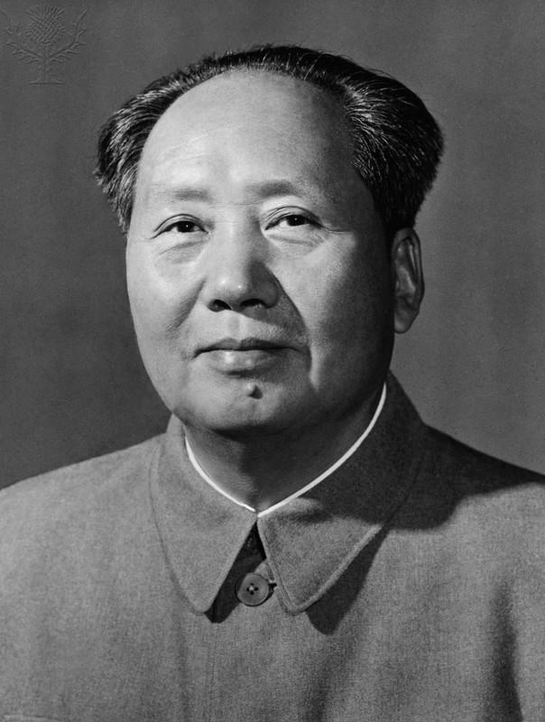

En ljus sol över Kina som heter Mao
Under ordförande Mao Zedongs vägledning reste sig folket i Kina från århundraden av förtryck och orättvisor. Hans kloka och okuvliga ledarskap blev en styrka som inspirerade arbetare, bönder, soldater och ungdomar över hela landet.
Massornas kraft och tro
Överallt följde folket Maos undervisning med hängiven trohet. I fabriker och på fälten arbetade människor dag och natt för att bygga ett nytt socialistiskt samhälle. Den röda fanan, symbolen för revolutionens seger, blev en ledstjärna för nationens framtid.
Tanken som vägledning
Ordförande Maos tankar upphöjdes till ett vägledande ljus. Ungdomen höjde högt det lilla röda häftet, och soldaterna marscherade med fast steg, övertygade om att varje handling de utförde var ledd av hans visdom. Folket lärde sig att lita på sin egen styrka och på kollektivet.
En ny era
Under Maos ledning byggdes en ny era av enighet, framsteg och revolutionär anda. Massorna, förenade i tro och handling, kämpade för att skapa ett starkt och enat Kina. “Det Röda Arkivet” bevarar dessa berättelser som ett historiskt minne av en tid då folket följde sin ledare med okuvlig beslutsamhet.